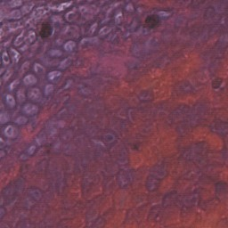
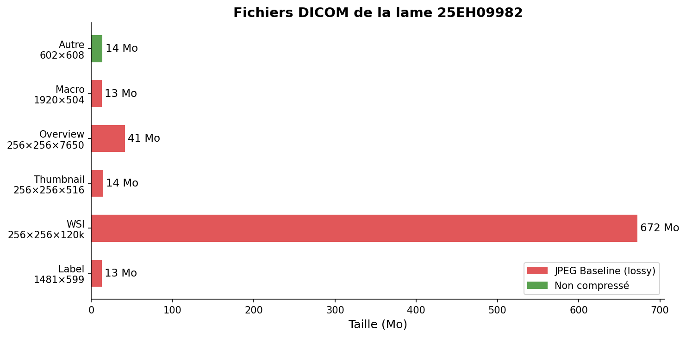

Benchmark de compression d'images WSI
Comparaison des formats de compression classiques
Comparaison visuelle d'une région d'intérêt d'une lame histopathologique compressée avec différents formats (JPEG, WebP, JPEG2000) à niveau de qualité équivalent. La réduction de taille de fichier par rapport au PNG original est indiquée pour chaque format.

Exemples de tuiles histopathologiques
Les Whole Slide Images (WSI) sont des lames histopathologiques numérisées à très haute résolution, pouvant atteindre plusieurs gigaoctets. Pour faciliter l'analyse et le benchmark, nous extrayons des tuiles de taille fixe (2048×2048 pixels) des zones tissulaires.

Exemple d'une tuile 2048×2048 extraite d'une lame WSI

Structure typique d'un fichier SVS
Résumé
Ce projet explore l'efficacité de différents formats de compression d'image appliqués aux lames histopathologiques (Whole Slide Images — WSI).
Dans un premier temps, un benchmark systématique compare trois formats de compression classiques — JPEG, WebP et JPEG2000 — sur le dataset SVS-TCGA-2048. Les métriques PSNR et SSIM sont mesurées pour chaque format à différents niveaux de qualité (QF), permettant d'identifier le meilleur compromis entre fidélité visuelle et réduction de la taille de fichier.
Les résultats montrent que WebP offre le meilleur rapport qualité/taille pour les lames histopathologiques, suivi de JPEG2000 puis JPEG. La réduction de taille peut atteindre 97% tout en maintenant une qualité visuelle diagnostique acceptable (PSNR supérieur à 30 dB).
Dans un second temps, une expérimentation alternative est menée : la conversion des images vers le format vectoriel SVG via l'outil VTracer. L'objectif est d'évaluer si la représentation vectorielle peut offrir une compression efficace pour ce type d'images. Les résultats indiquent que le SVG est en moyenne 10× plus volumineux que le PNG original sur les images histopathologiques, en raison de leur nature riche en textures qui résiste à la vectorisation.